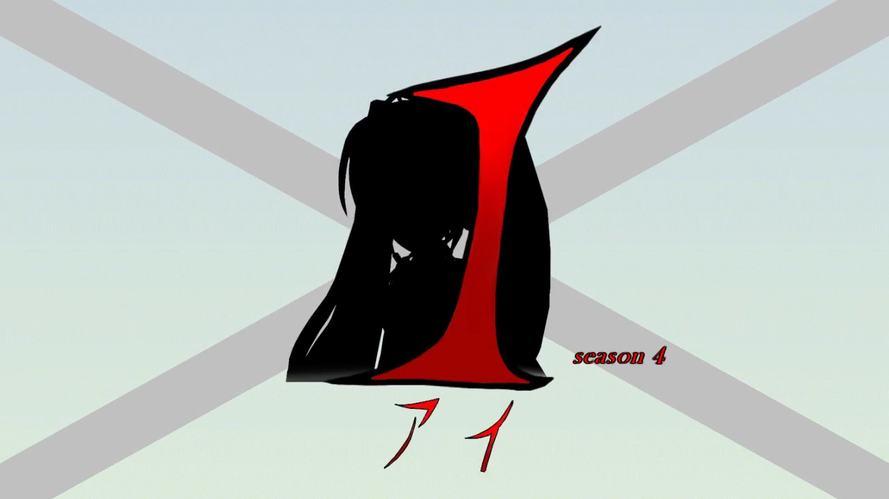

MMDドラマ I(アイ) とは？
本MMDドラマは、能力バトルフルモーションアニメです。
とある研究所から逃げ出した初音ミクのクローン。
その道中で海に落ちた彼女は命からがら町中の川に流れ着き、鏡音レンに拾われた。
彼女をめぐって様々な強大な組織が彼らに襲い掛かる。
本ドラマの見どころは、何と言ってもフルモーションである点です。
会話シーンでの表情の変化や細かい仕草にも気を使っています。
そして、なによりも戦闘シーンの能力描写には力を入れています。
また、単なる戦闘アニメではなく組織や人同士の駆け引きを重要視しています。
例えば、味方側と黒幕意外にも中立的立場やそれぞれの協力組織などの絡み合いも重要視しています。
能力についても、単に強力な武器というわけではなく、必ず長所と短所があるように描いています。
場合によってはカテゴリーBがカテゴリーSに勝利する、なんてことも・・？
製作者：ネオンP(RinRinFire)
本サイトについて
本サイトの目的は、MMDドラマ I(アイ)のストーリーを整理することです。 おかげさまで、2026/3/29現在、本ドラマは Season 1~4 計 28 話を投稿するに至りました。 これはひとえに視聴者様のおかげであると存じています。 一方で話数が多くなるに伴い、話が複雑化してしまうのも事実です。 そのため、新規で視聴して下さる方々が Season 1 第一話から全ての動画を追うのはハードルが高い場合があると考えております (もちろん、全動画を見ていただけると製作者は泣いて喜びます)。 私ネオンPとしては、長年視聴してくださっている方々も、新規参入の方々も大切にしていきたいと存じております。そこで、本サイトでは途中参入のハードルを少しでも下げるため、各動画のあらすじや登場人物紹介などを記載しています。 これにより、例えば Season 1 はあらすじを見て、Season 2 以降は動画を見る、といった選択肢ができればと思っております。
各種リンク
製作者 X：最新話投稿などの情報を流しています！シリーズ：ニコニコ動画の「MMDドラマ I(アイ)」シリーズへのリンクです。
Season 1 第一話：本ドラマ最初の動画です。
注意事項
・本MMDドラマには多くの独自設定が含まれ、各キャラクターの原作とは異なる場合があります。これら設定は、原作とは関係ありません。
・本ドラマに登場する団体名、固有名詞、設定などはいずれも実在のものと一切関係ありません。
・本サイトは性質上、MMDドラマ I(アイ)における一部ネタバレを含みますので、ご注意ください。